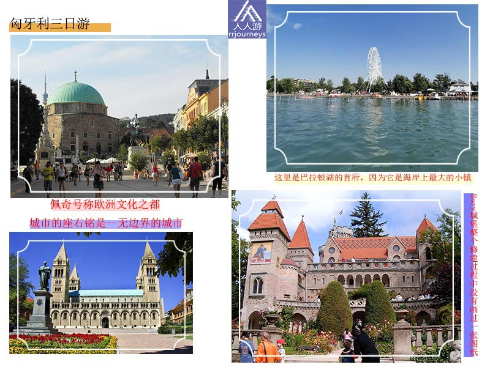
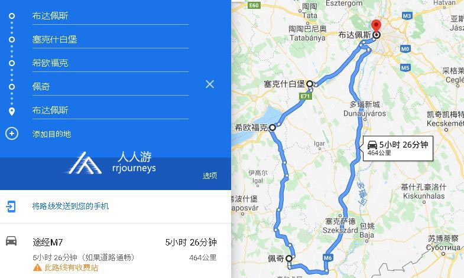
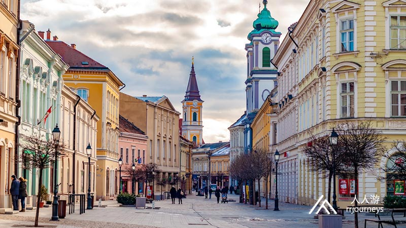
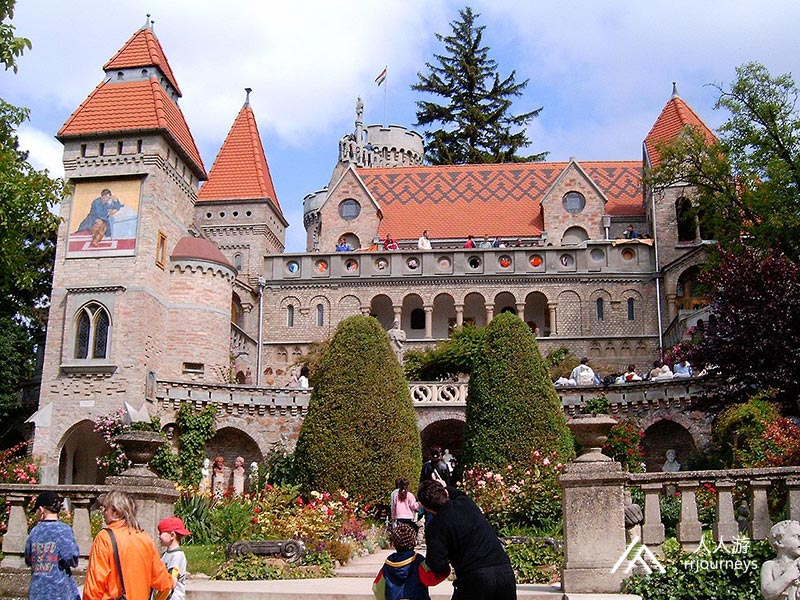
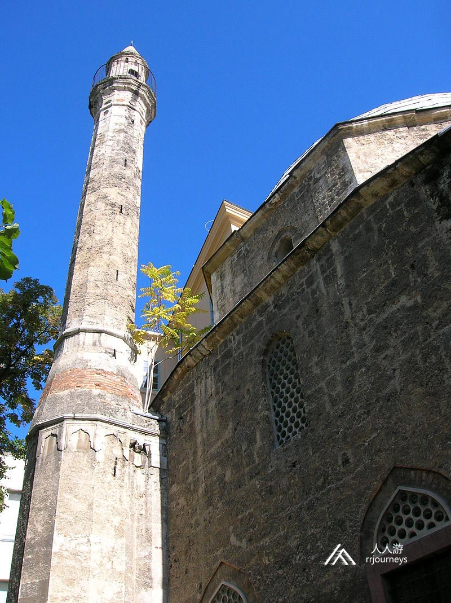

特色旅游
1日游
2-4日游
5-10日游
精品长线旅游
地址：匈牙利 布达佩斯 Budapest-Keleti, 1087
电话：0036-30-9574162
邮件：rrjourneys@gmail.com
网站：http://www.rrjourneys.com
【美景】
中世纪匈牙利王国的首都-塞克什白堡
中欧最大的湖泊-巴拉顿湖
巴拉顿湖的首府-希欧福克

【美食】
Goulash牛肉炖汤
Libamáj 鹅肝
Lángos特色油饼
Toltott Kaposzta 圆白菜肉丸
Halászlé 鱼汤
Ujhazi Tyukhuslevesi 家常老鸡汤
Kurtoskalacs 烟囱卷面包
Egri Bikavér埃格尔公牛血葡萄酒
行程路线：

具体行程：
DAY1：布达佩斯-塞克什白堡-希欧福克
入住地点：希欧福克
参加成员请按通知的时间及地点集合，一同从布达佩斯出发，前往塞克什白堡。
塞克什白堡 塞克什白堡是匈牙利中部城市，10至16世纪为匈牙利王国首都，也是皇家住所，37位匈牙利国王加冕及17位国王埋葬于此。它是重要的贸易路线通往巴尔干半岛、意大利和维也纳。自公元前5世纪以来，这个地方就一直有人居住。在罗马时代，这些定居点被称为戈里森和赫库里亚。 经过第二次世界大战，城市逐步走向工业化，大型的重要工厂在这安家落户，并建造了几个居住区。塞克什白堡市中心的建筑保留了巴洛克风格。最重要的巴洛克建筑是大教堂，主教宫殿和市政厅。中世纪的遗迹罗马式大教堂和匈牙利圣史蒂芬陵墓在塞克什白堡被考古学家发掘。 现在这座城市因为拥有大量的熟练劳动力和良好的交通连接及现有的基础设施吸引了许多外国公司，电装，美铝，飞利浦也定居在此。

景点：阿尔巴代浴场 阿尔巴代浴场是新艺术运动风格的历史浴室建筑，1905年改建过。它有着八角形圆顶建筑的入口，入口通过一排砖头连接到楼上的图案，并通过砖装饰的半圆形砖拱连接到两侧装饰有贝壳的眉毛窗户，浑然一体，惟妙惟肖。 1946年该市的火力发电厂开始提供蒸汽。经过数年的重建和拆除，桑拿浴室，蒸汽浴室和体验淋浴等新建的设施已和老阿尔巴代浴场融为一体，深受游客们的喜爱。
景点：圣史蒂芬大教堂 塞克什白堡的圣史蒂芬大教堂是城市最重要的古迹之一，是匈牙利最大的教堂，也是匈牙利的加冕教堂之一。大教堂为巴洛克式风格，并带有哥特式和古典主义元素，一座拜占庭式的四瓣教堂。四瓣教堂的东瓣建于14世纪，16世纪被拆除，并增加了一个新的哥特式避难所。1235年国王贝拉在此加冕。 奥斯曼帝国时代，它曾充当清真寺，并在玛丽亚•特蕾莎女王的支持下其重建。1777年在塞克什白堡创立了主教。在此过程中除塔楼外，整个教堂都被拆毁，东面又新建了一座巴洛克式教堂和神社。由于圣史蒂芬大教堂受教皇庇护的特权，它一直具有大教堂的地位。在其西北塔楼中有一座塔钟博物馆，可以看到教堂百年历史的钟表，记录了教堂百年的沧桑。
景点：市政厅广场
市政厅广场是塞克什白堡的主广场，老城区中心的L形广场是匈牙利巴洛克风格最宏伟的景点之一。广场两侧是巴洛克风格的建筑，包括宫殿，公共机构，修道院和教堂，它们主要是在17至18世纪建立的，市政厅的主要建筑部分在19世纪初被重建。 市政厅广场具有重要的文化意义：该市的大多数传统活动都在这个广场和广场边的大街上举行。
景点：鲍里城堡
鲍里城堡修建于20世纪。耶诺鲍里是一位建筑师和雕塑家，同时也是布达佩斯技术和经济大学的美术教授。这座构造极其复杂的建筑就是由他构思和建造的。他在整个修建过程中没有画过一张图纸，出于疯狂的艺术使命感，他用自己的双手建造了这座城堡。城堡于1934年对外开放。这座建筑有30米高，包含30个房间。城堡中还有一个画廊，里面陈列着匈牙利最伟大的艺术家和雕塑家的作品。

希欧福克
希欧福克在巴拉顿湖南岸。面积约为125平方公里。早在罗马帝国时代，公元一世纪就已经有人居住。它位于希欧海峡的尽头，是巴拉顿湖和多瑙河之间最重要的后勤站。
景点：海滩
城市的海岸线可以分为两部分：希奥运河以西的部分称为银滩，而东部的则是金滩。裴多菲长廊是这座城市的大多数的酒店和娱乐中心，都位于黄金海滩上。沿着长廊的大海滩，被称为可乐俱乐部，向东一点的地方是免费的海滩，绵延数公里一直延伸到免费浴场。
景点：水塔
DAY 2 希欧福克 - 佩奇
入住地点：佩奇
佩奇
佩奇是匈牙利的第五大城市，在该国的西南部，与克罗地亚接壤。匈牙利的第一所大学于1367年由路易斯一世在佩奇建立。最古老的考古发现已有6000年的历史。在罗马时代之前，凯尔特人居住在这个地方。早在2世纪初，罗马人以佩奇为中心建立了基督教城市。到4世纪，它成为重要的早期基督教中心。最早期基督教墓地在2000年12月列为联合国教科文组织世界遗产。同时佩奇还是罗马天主教教区的所在地。佩奇拥有长达150年的奥斯曼帝国时代的悠久传统，奥斯曼帝国编年史作家易卜拉欣就住在这里。就土耳其建筑而言，佩奇是匈牙利最富有的城镇，两个著名的遗迹梅米·帕萨的浴场遗址和奇迹般的工人伊德里斯·巴巴陵墓就座落在此。 佩奇在历史上是一个多民族的城市，许多文化交融在一起，创造了不同价值的大熔炉，这是2000年历史的丰硕成果。1998年，佩奇因维护其文化上的少数群体，以及对南斯拉夫战争的难民的宽容和帮助的态度而被联合国教科文组织授予“ 和平之城”奖。在75,000至200,000居民的城市类别中，它是第二个“ 宜居城市”。现全国最大的大学仍然位于佩奇，约有34,000名学生。 2010年，佩奇与埃森和伊斯坦布尔一起被选为欧洲文化之都。这个城市的座右铭是“无边界的城市”。
景点：塞切尼广场（主广场） 塞切尼广场是佩奇中心的主要广场。在中世纪，它是市政厅和教区教堂集中的地方。广场的中央建筑是帕夏·卡西姆清真寺，佩奇的象征之一。广场的纪念碑到处可见。广场在2010欧洲文化之都项目的支持下进行了重建。一年一度的著名的佩奇和维拉尼葡萄酒产区的集市和老式狂欢节品酒会及佩奇日庆典在广场上举行。从广场上的建筑可以看到城市历史和有趣的过去，像加兹·卡西姆清真寺仍然屹立在那里，尽管几个世纪前奥斯曼土耳其人撤退后被奉为教堂，有新月和伊斯兰教十字架在冲天炉上仍然可见。从16世纪起直到现在，广场的亚科娃利哈桑清真寺仍充当积极的角色。
景点：佩奇大教堂 圣彼得保罗大教堂，也被称为佩奇大教堂，是佩奇教区教堂天主教的宗教象征建筑，教堂长70米，宽22米，塔楼高60米。佩奇大教堂的基础来自四世纪左右的罗马时期。在圣史蒂芬一世统治期间，修改并建了两个西塔。中世纪教堂的两个侧塔和哥特式教堂得以扩大。
景点：早期基督教墓 佩奇是罗马人于2世纪初建立的酿酒殖民地。到4世纪，它已成为重要的早期基督教中心。最早的基督教公墓可以追溯到这个时代。早期基督教墓地在2000年12月成为联合国教科文组织世界遗产。
DAY 3 佩奇-布达佩斯
返回布达佩斯
佩奇大学尽管1367年出现在大学的档案中，但它并不是路易斯一世于1367年在佩奇建立的第一所大学的继承者。这个第一所在佩奇建立的大学，是由教皇阿尔本颁发的特殊学历，类似于维也纳大学。在奥斯曼帝国占领期间，这所大学完全停学。1785年约瑟夫二世将皇家学院从杰尔迁至佩奇而重新启动。1802年，皇家学院由弗朗西斯一世又命令移回了杰尔。直到1833年，佩奇的主教与市参议院联合成立了佩奇学院。 佩奇的现代大学始建于1912年，最初位于斯洛伐克布拉迪斯拉发。1921年起，大学迁至佩奇。1951年，医学院从大学中分离出来，该大学于1982年更名。现在的佩奇大学是于2000年1月1日成立。
景点：清真寺 清真寺是匈牙利保存最完好的土耳其古迹之一，建于16世纪下半叶，从清真寺的内部，通过新的木制楼梯通向宣礼塔。这座十二角塔由雕刻的石头建造，高6.5米，位于坚固的基座上。塔的内部，有87个台阶通向22.5米高的圆形阳台。

6天5夜乌克兰小众深度游
7天6夜克罗地亚、波黑小众
5天4夜波兰、斯洛伐克小众
四天三夜奥地利、斯洛文尼亚
匈牙利最大的滑雪场一日游
6天5夜，奥地利滑雪自由行
7天6夜，奥地利旅游滑雪自
4天3夜，奥地利滑雪自由行
Copyright 2020 www.rrjourneys.com
人人游 旅游官方网站 版权所有 All Rights Reserved